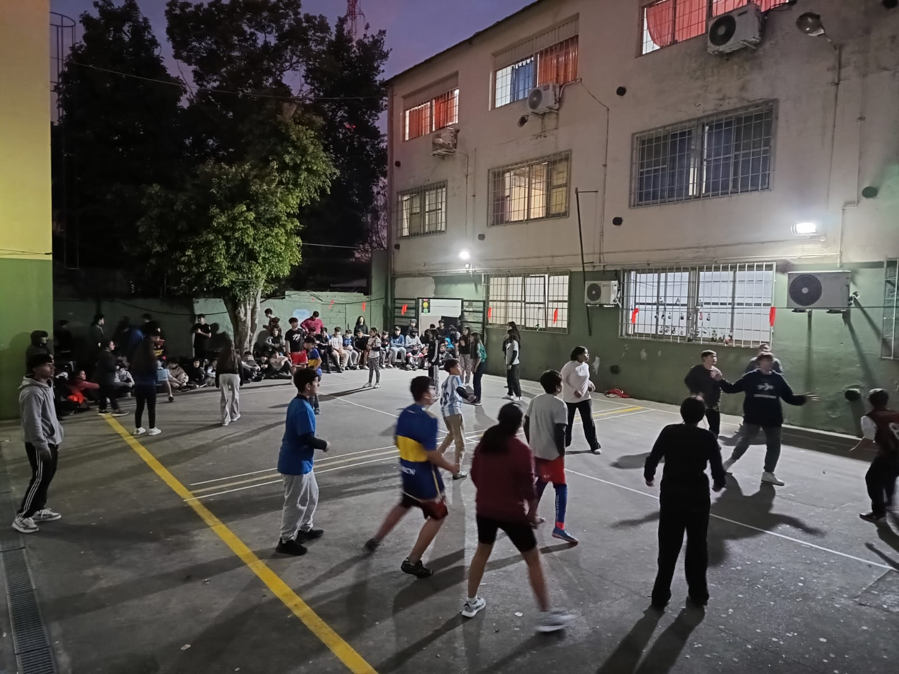
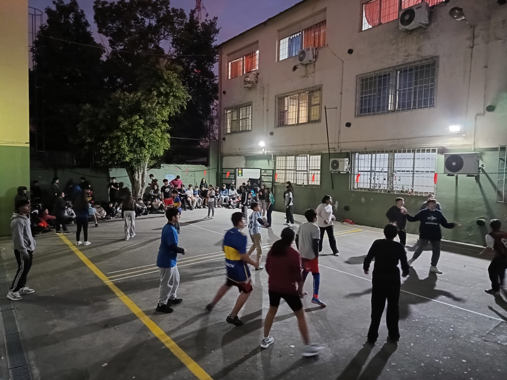

Breve reseña histórica
La Escuela nació en 1985 por una necesidad en la zona, ante una mayor demanda de parte del alumnado por ingresar a la Educación Técnica y la falta de vacantes en las escuelas del partido. Así, por medio de la resolución N°674 del ya desaparecido Consejo Nacional de Educación Técnica (CONET) nació nuestra Escuela, con el nombre de Escuela de Educación Técnica N°3 (ENET N°3). Formada en un predio que no estaba pensado para ser Escuela, contó en un principio con 3 aulas, una oficina de secretaría, sala de profesores y 2 baños. Otras escuelas donaron los pizarrones, algunos elementos didácticos y bancos sobrantes. Los primeros alumnos fueron aquellos que no resultaron favorecidos en los sorteos de las escuelas técnicas de la zona, aceptaron el desafío de estudiar mientras construían su propia escuela, siendo también partícipes las familias. Algunos de los padres inclusive han fundado la Cooperadora. De a poco y entre todos, se fue logrando construir un ambiente adecuado para el estudio «Para nosotros la escuela es nuestra segunda casa porque la construimos nosotros también (.) era clases y construcción al mismo tiempo» Cuenta uno de los ex alumnos, que hoy forma parte del Cuerpo Docente. En la primera reunión de personal el Director fue muy claro: «No podemos ofrecer un lindo edificio, ni un gran equipamiento pero SI podemos ofrecer CALIDAD». Durante 1986 el director propuso a los docentes capacitarse en computación en la Universidad Tecnológica Nacional y surge esa especialidad para la escuela. Buscando siempre la calidad en la enseñanza, la capacitación constante y la posibilidad de brindar nuevas opciones en educación, se fue transformando ese galpón, entre escombros y pozos, en la Escuela que tenemos hoy, con instalaciones apropiadas y equipamiento de última tecnología.
El legado de nuestro nombre nos inspira: curiosidad, pensamiento crítico y compromiso con el conocimiento al servicio de la sociedad.
 
